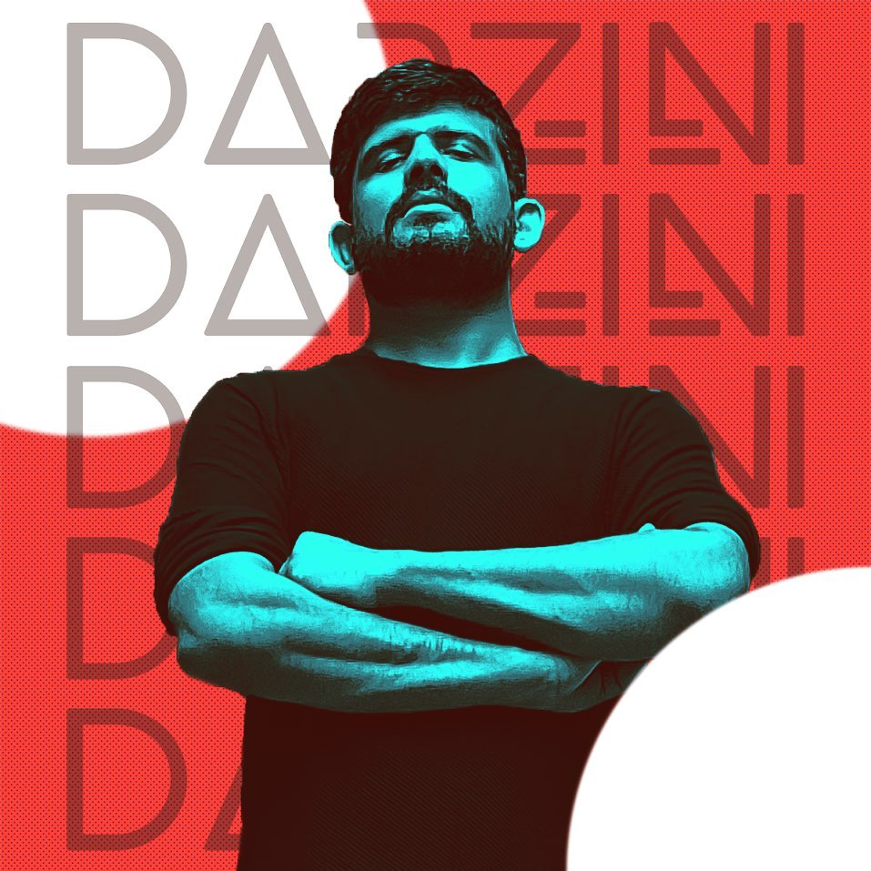

Six Electronic Tracks, One soothing pop track and Four Tracks with Minimal Darzini-esque Production
One song is in Spanish that you'll absolutely love
Must Listen Tracks from this Album
Songs in this album:
I'm Not Fine
Lost On Me
Keep Hoping
The Lies
Another Possibility
Feel So Alone
Tengo Que Irme
Windows
Can't Stand It
A Sad End
About the songs
I'm Not Fine
I'm Not Fine is the first track off the album. It kicks off as a soulful piano track, the lyrics echoing the pain of someone who's
trying to move on from a long lost love and reminiscing all the past times.
This track was one of the first ones to be written and the first one to be publically received well
Lost On Me
Lost On Me is the second track off the album. It is the first pop song by Darzini, and the lyrics are mostly about
quote unquote To get out of love with someone. The song perfectly describes the process of being drifted away.
This track was the first ones to reach over 100 views on YouTube on its first day of release
Keep Hoping
Keep Hoping is the third track off the album. It follows the piano melody + vocals only pattern and the lyrics are about
having a ray of hope for someone getting back in your life even though its all over between you too.
This track was the first song to be written, and that was right after a break up.
The Lies
The Lies is the fourth and the first EDM track off the album. It kicks off beautifully with a catchy beat and transitions into a powerful chorus packed with nostalgia as it takes you to early 2012 Electro House days. The lyrics are about, well, someone's lies catching
up to you.
This track was written on a live stream on YouTube
Another Possibility
Another Possibility is the fifth track and follows the piano melody + vocals formula. The lyrics are about, in hindsight, reminding
yourself to make the most out of an opportunity and play your cards right once you have it since these are very limited in number.
The melody for this track came right after a karaoke night
Feel So Alone
Feel So Alone is the sixth and second EDM track. It starts off with a catchy piano melody and gets to a powerful chorus with
vocal chops and a hard-hitting lead. The lyrics are about feeling like you are not enough for anyone out there.
The music for this track was created 5 years back and was remixed and remastered with vocals
Tengo Que Irme
Tengo Que Irme is the seventh track off the album and is another Piano + Vocal song. This is a Spanish song, and the lyrics are about you wanting to leave after all that is over.
This song stands at the highest number of views among all(basically it was spammed the most over the post-release excitement)
Windows
Windows is the eighth track off the album and has a very upbeat + happy feel to it unlike the other tracks. The lyrics are about, well,
flirting with your loved one like every other happy track usually is.
This song was the first one to be released from the album
Can't Stand It
Can't Stand It is the nineth track and also an Electro number, and the chorus has gotten a lot of praise. The lyrics are about reacting after your ex finds a new lover. Not too pleasant, yes.
This song was the first offical track by Darzini to have vocal chops as a major element
A Sad End
A Sad End is the tenth and the final track off the album and also despite its name has an upbeat feel to it. The lyrics are about
finally accepted that it came to an end. Yes it took 10 songs to get to that point. That's just how artists are.
This song was the final one to be made or released. Yes. there's nothing else that's interesting for this one. Sorry.
Previous Albums by Darzini
Name
Type
Release Year
Number of Songs
Poster
Spotify Link
Lamha
Single
2020
1
Lamha - Album Art
Lamha
Losing Myself
Single
2020
1
Losing Myself - Album Art
Losing Myself
Intrusive Thoughts
Single
2020
1
Intrusive Thoughts - Album Art
Intrusive Thoughts
Regrets And Grievances
Album
2020
11
Regrets And Grievances - Album Art
Regrets And Grievances
Silence
EP
2019
3
Silence - Album Art
Silence
Read Aloud
EP
2019
3
Read Aloud - Album Art
Read Aloud
Melody
EP
2019
2
Melody - Album Art
Melody
Regrets And Grievances
What is in this album?
11 soothing songs
Nine Tracks with Minimal Darzini-esque Production and Two Electronic tracks (which have been an absolute hit)
Ruminations. Need I say a thing more?
Must Listen Tracks from this Album
Feel Alright
Ruminations
Existential Crisis
No More Lies
Songs in this album:
Need I Say A Thing More?
No More Lies
She's Not That Into You Boy
Rescue Me
Existential Crisis
A Smile That Never Was
Feel Alright
Are We So Alone
Found Another You
Trying Too Hard
Ruminations
Achievements
Official Music Artist for the YouTuber and #4 Chess Player in India Adhiban Basikaran
Won various competition in online events on Discord
Indian Music Diaries wrote an article on one of the songs from Regrets and Grievances (Ruminations)
Here is the article written on The Indian Music Diaries
Prateek Chachra who goes by the moniker Darzini is a Delhi-based electronic artist. His single Ruminations is a part of his latest album Regrets and Grievances. His track is not only soothing and soulful but also very energetic which can make a person groove or be a perfect party song to play.
Also an honorary achievement: Covering a Metallica Song in A Green Day TShirt:
About Darzini

Prateek Chachra, better known by his stage name Darzini, is an electronic music composer/producer from New Delhi. His main influences
are Deadmau5, Calvin Harris and Zedd